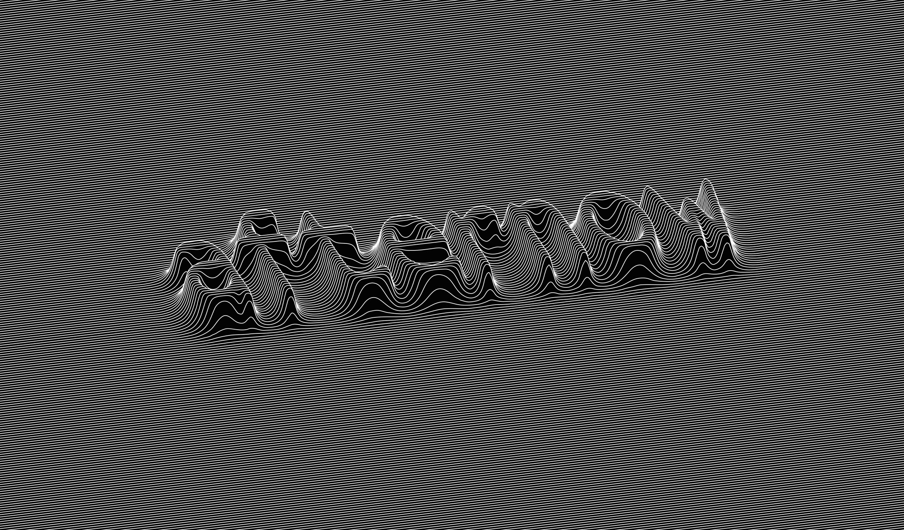
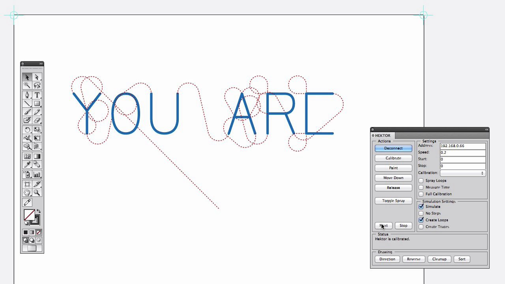
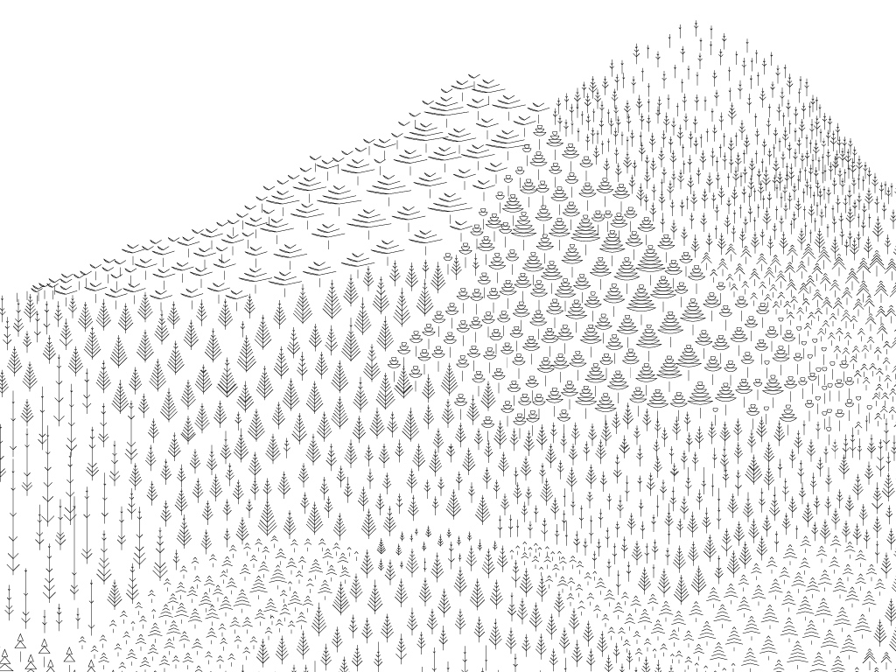

SCRIPTOGRAPHER
Jürg Lehni, 2001 ~ 2012
Scriptographer is an open-source scripting plugin for Adobe Illustrator, available as a free download at Scriptographer.org.
The software was created to give the user the possibility to extend Illustrator’s functionality by writing simple scripts in the JavaScript language, with a focus on ease of use, simplicity and clarity of the provided vocabulary.
Scriptographer’s strength lies in the encouragement of a symbiotic relationship between an existing tool for computer assisted manual creation and the benefits of formulating bespoke processes in code.
Using Scriptographer, the user is no longer limited to the same standardised tools provided by closed software. The scripting environment allows the creation of mouse-controlled drawing tools, effects that modify existing graphics, as well as scripts that create new ones.
Since Illustrator is already part of the daily workflow of many designers, it removes one of the thresholds when teaching programming in art schools:
Analogies can be drawn between manual ways of working and the code that tells Illustrator what to produce, and the results of the code’s execution can be manually inspected afterwards. Through Illustrator’s arrow tools, as well as the many palettes available to view information about the geometries and attributes of the created items, the results become almost tangible.
This method for teaching has been tested and improved over the course of 3 years in a research project and a series of workshops conducted by Jürg Lehni and Jonathan Puckey at ECAL in Lausanne. The results of the project have helped to greatly improve and simplify the platform as well as write tutorials and example scripts, to better support the teaching.
Scriptographer allows us to reclaim a more personal relationship we used to have with our tools, and reintroduce interesting points of friction and elements of craft into our highly optimised software, with the aim to learn to create tools ourselves. After all, the computer was invented as a tool to create tools.
Throughout the years, an active community has grown around the plugin, exchanging ideas, scripts and offering help on the Scriptographer.org website. The plugin was initially developed for Illustrator 9, and kept up-to-date and improved in functionality until Illustrator CS5. Unfortunately, the launch of CS6 brought too many changes in the underlying APIs and has therefore set an end to the project.
But the effort lives on in Paper.js, created by Jürg Lehni and Jonathan Puckey as an open-source vector graphics programming framework that runs on top of open-web standards such as Canvas 2D and SVG, with the aim to broaden the reach of Scriptographer’s API and free it from the closed and expensive confines of Illustrator.

"Hector Draws a Landscape"
Limited edition poster produced by Jürg Lehni for the Swiss artist Philippe Decrauzat.
The effect is inspired by the 3D typography on the record sleve of The Faust Tapes from 1973.

"You Are"
Software Interface for Hektor by Jürg Lehni, 2002 & 2008.

"Plantus Scriptum"
Joachim Felix Correia, Robert Huber & Gaël Kilchherr, ECAL, 2008